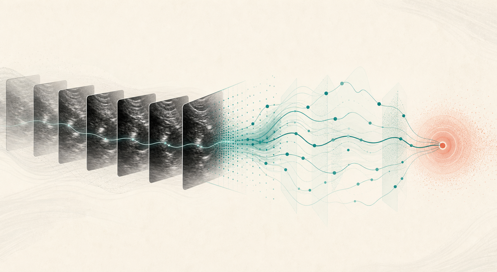

View & Quality
임상적으로 의미 있는 영상면을 찾고 신뢰하기 어려운 프레임을 제외합니다.
Research project · 2026
희소한 임상 데이터에서 영상의 시간 정보와 해부학적 구조를 함께 학습해, 선천성 기형 선별을 보조하는 연구 프레임워크입니다.
01 · Problem & task
선천성 심장질환은 유형별 표본이 적고 구조적 다양성이 크며, 초음파 noise로 인해 한 장의 프레임만으로 판단하기 어렵습니다. 이 프로젝트는 표준 영상면 인식과 해부학적 구조 분석을 바탕으로 환자·비디오 단위의 선별 결정을 다룹니다.
임상적으로 의미 있는 영상면을 찾고 신뢰하기 어려운 프레임을 제외합니다.
심장 시퀀스 전체의 정보를 모아 정상·이상 위험을 예측합니다.
심장 구조의 위치·분할을 설명 가능한 보조 과제로 사용합니다.
02 · Evidence and datasets
Executed audit · 3D CMR
실제 다운로드·전처리·QC를 완료한 담당 데이터입니다.
Dataset report →Public archive checked
2D mask·ellipse annotation을 가진 biometric/segmentation dataset입니다.
Catalog profile →Source reviewed
CHD structural classification을 위한 3D CT reference입니다.
Catalog profile →Access to verify
multimodal prenatal CHD detection의 access-audit 후보입니다.
Catalog profile →모든 split, 성능 보고, 오류 분석은 환자 단위로 수행합니다. 원본 의료 데이터와 제한 파일은 저장소에 올리지 않습니다.
03 · Proposed method

초음파에 적합한 2D CNN 또는 ViT feature를 추출합니다.
영상면, 품질, 구조 위치, segmentation을 보조 과제로 둡니다.
pooling baseline부터 attention, SELSA-style aggregation까지 비교합니다.
비디오·환자 단위 CHD 위험과 confidence를 제공합니다.
feature·attention·graph·semi-supervised learning의 공통 기반을 독립적으로 익힙니다.
Open methods →SELSA와 SAD의 원문 도식·수식·실험 근거·적용 한계를 논문별로 읽습니다.
Open paper reviews →모델보다 먼저 데이터 단위·라벨·접근성·검증 상태를 확인합니다.
Open dataset atlas →04 · Evaluation protocol
환자 단위 split을 사용하고, 가능하면 device·site held-out test를 둡니다. frame을 무작위로 나누지 않습니다.
AUROC, AUPRC, 고정 specificity에서의 sensitivity, confidence interval, calibration, class별 recall을 함께 봅니다.
single frame, temporal pooling, attention/SELSA, auxiliary anatomy, semi-supervised learning을 비교합니다.
false negative, uncertain prediction, subgroup shift, annotation noise와 임상적 실패 양상을 확인합니다.
05 · Research roadmap
접근 가능한 데이터셋마다 최소 3개 subject를 검사하고 provenance, label, format, leakage 위험을 기록합니다.
고정된 환자 단위 protocol으로 frame·video baseline을 만듭니다.
통제된 ablation으로 sequence aggregation과 anatomy supervision을 검증합니다.
각 사이트 섹션을 Introduction, Methods, Experiments, Discussion의 논문 재료로 전환합니다.